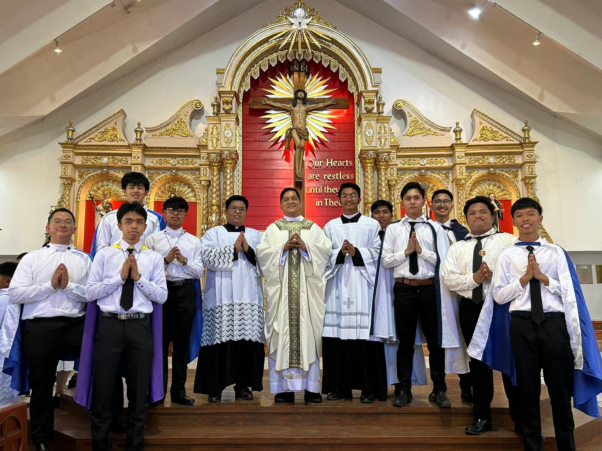

Faith & Spiritual Growth

Our ministry includes a dedicated spiritual formation area with several ways to grow. Build your spiritual foundation with Scripture and strengthen your values with regular formation sessions.
- Liturgical Seminars
- Serving at the Mass
- Bible Study Circles
Fellowship & Activities
Experience the joy of community through vibrant events. Church leaders recommend regular youth interaction each week to build strong bonds. We have several choices for you to get involved.
- Youth laughing and praying together
- Sports and Music Leagues
- Team-Building Camps
Mentorship & Guidance
Our certified personal trainers work with you to help you obtain your spiritual or moral goals and track your progress. This sessions has many benefits.
- Youth with a mentor
- Accountability
- Consistent Support and Motivation
Common Faith Practices
The following are common faith practices that we encourage our members to do as part of their daily spiritual routine.
- Personal Prayer
- Whenever school, work, or life feels overwhelming, just hit pause. Close your eyes and talk to God exactly like you are talking to a best friend. Let out your worries, say thank you for the good moments, and take a quiet minute to let your mind settle
- Reflection
- Before you go to sleep, unplug for a moment to check in with yourself. Open your Bible or a reflection app, read a single uplifting verse, and hold that positive message in your heart. Think about how you can use that message to be a better version of yourself tomorrow.
- Living the Gospel
- Faith isn't just lived inside the church it happens out in the world. Make it a daily practice to brighten someone's day without expecting anything back. Help your parents with chores, check up on a friend who is having a rough week, or simply offer a genuine smile to someone who needs it.
For more updates on how our local youth stay active in their faith, visit or message us at the San Agustin Parish Youth Ministry.